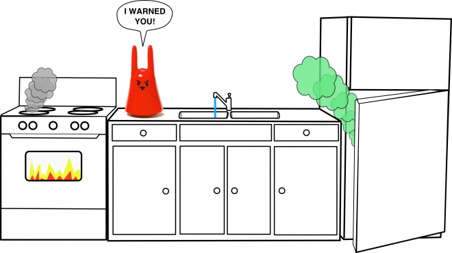

Evil Kitchen
(2010)
(2010) Speculative design of a digital assistant that changes behaviour through punishment instead of reward
Arguably, “persuasive technologies”, those systems developed to motivate behaviour change in users - typically around health and sustainability - tend to rely heavily on positive feedback as a motivator. Users get smiley faces, badges and a variety of other meaningless pats on the back.
In this controversial project we propose that such a blinkered reliance on positive reinforcement ignores the potential value of aversive feedback. The field of behavioural psychology has long recognised the variety of ways in which humans can be motivated, however human-computer interaction fixates on the smooth and politically convenient.
To demonstrate this idea, we present the design of an evil kitchen that uses aversive feedback as the mechanism to achieve behaviour change. Kitchens are perhaps one of the most resource hungry rooms in the average household, being a focal point for using large amounts of power, gas and water through daily activity. Therefore, changes in behaviour around the use of appliances and resources in the kitchen can have an effect on the environmental impact of the entire household.
In our kitchen, the refrigerator, electric stove, kettle, water meter and boiler are connected to an intelligent system that is embodied through a physical agent (a Nabaztag). Based on your behaviour in the kitchen, the system will punish you for behaviours that have negative effect on the environment. For example, if you left the light on in the kitchen, the system will retaliate by switching the freezer off and spoiling your food. If you spend too long in the shower the system might switch off the boiler. In addition, the system uses negative reinforcement through an incessant nagging when using the kettle. The only way to avoid this is through using the correct amount of water (based on weight of water used per boil).

The point of the system is to demonstrate that real behaviour change is also entirely achievable through aversive feedback as a design tool. The literature of behavioural psychology has half a century's head start on understanding this kind of stuff so it is naive of Human-Computer Interaction to focus just on one small part of this.
There is much more detail and background in the paper: